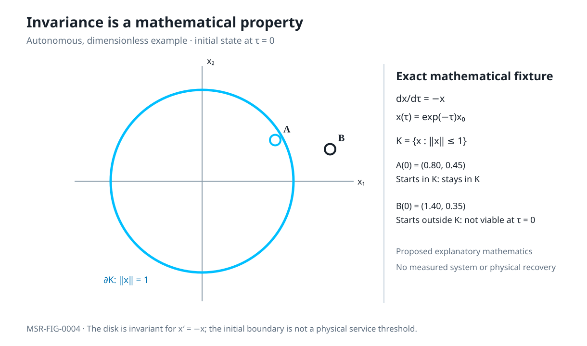

This dimensionless laboratory shows the flow x′(τ)=−x(τ), x(τ)=e−τx₀, with K={‖x‖≤1}. Points starting inside K remain inside. A point starting outside is not viable at τ=0, even when it enters later.

Figure MSR-FIG-0004 is an explanatory mathematical fixture. The time control changes a dimensionless parameter; this is not an empirical resilience or recovery simulation.